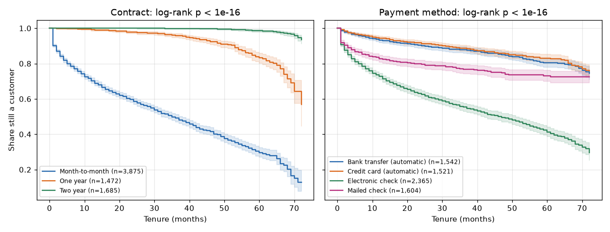
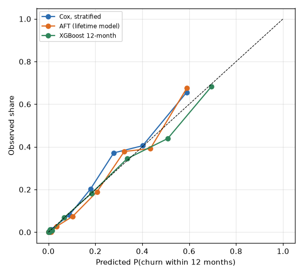
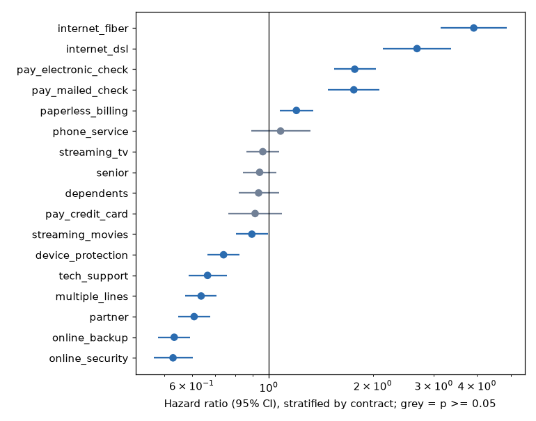
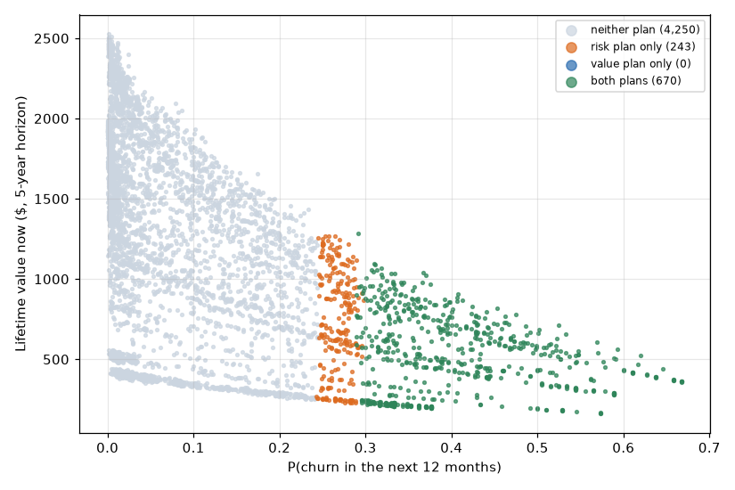
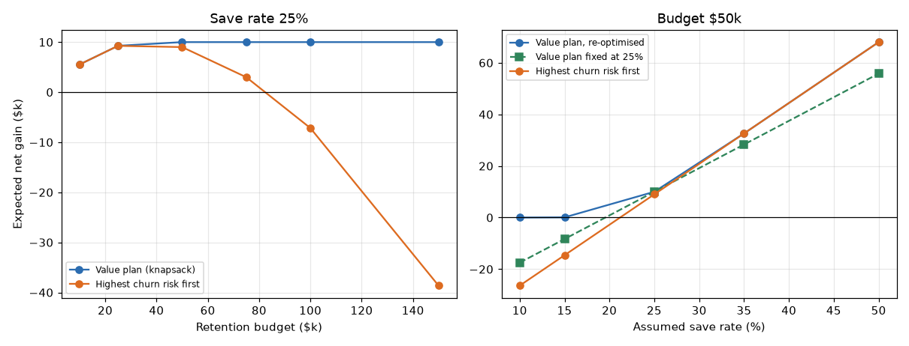
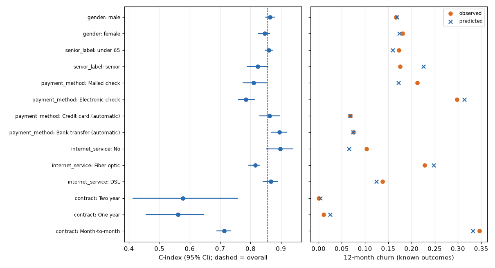

When do telecom customers leave, what is each one worth, and who should get a retention offer when the budget is fixed?
Kaplan-Meier retention differs sharply by contract (log-rank χ² 2,353, 2 df) and payment method (χ² 865, 3 df). 70.3% of month-to-month customers are still there after a year and 12.9% after six; two-year contracts keep 93.6%.

| Group | Level | Customers | Churned | Still a customer at 12 m | 24 m | 48 m | 72 m |
|---|---|---|---|---|---|---|---|
| Contract | Month-to-month | 3,875 | 1,655 | 70.3% | 58.6% | 39.7% | 12.9% |
| Contract | One year | 1,472 | 166 | 99.1% | 97.8% | 91.7% | 56.8% |
| Contract | Two year | 1,685 | 48 | 100.0% | 100.0% | 99.6% | 93.6% |
| Payment | Bank transfer (automatic) | 1,542 | 258 | 93.1% | 90.2% | 84.7% | 74.5% |
| Payment | Credit card (automatic) | 1,521 | 232 | 94.5% | 91.3% | 85.5% | 75.8% |
| Payment | Electronic check | 2,365 | 1,071 | 72.7% | 62.4% | 49.3% | 29.5% |
| Payment | Mailed check | 1,604 | 308 | 82.8% | 79.7% | 74.0% | 72.6% |
5,274 customers train the models; 1,758 held out (467 churned) score them. C-index uses every hold-out customer; 12-month metrics use the 1,480 whose 12-month outcome is known. 95% CIs from 500 paired bootstrap resamples.
| Model | C-index (95% CI) | 12-month ROC-AUC (95% CI) | 12-month Brier | Calib. error |
|---|---|---|---|---|
| Baseline: Kaplan-Meier by contract only | 0.768 (0.756–0.782) | 0.799 (0.784–0.814) | 0.1156 | 0.0243 |
| Cox proportional hazards | 0.855 (0.841–0.868) | 0.895 (0.877–0.911) | 0.0964 | 0.0284 |
| Cox, stratified by contract | 0.856 (0.842–0.869) | 0.896 (0.877–0.911) | 0.0959 | 0.0198 |
| Log-normal AFT (lifetime model) | 0.856 (0.842–0.869) | 0.900 (0.881–0.915) | 0.0942 | 0.0257 |
| XGBoost, 12-month churn classifier | 0.857 (0.844–0.869) | 0.906 (0.888–0.919) | 0.0911 | 0.0117 |
The 12-month classifier is slightly sharper on its own question (ROC-AUC +0.007, CI 0.001–0.013) but had to drop 781 recent customers whose outcome is not known yet, and it cannot say anything about month 13 onward, which is where most lifetime value sits.

The Schoenfeld test rejects proportional hazards (p < 0.01) for 7 covariates in the plain Cox model: contract_one_year, multiple_lines, online_security, pay_mailed_check, streaming_movies, streaming_tv, tech_support. Stratifying by contract gives each contract its own baseline hazard and clears the contract terms; 5 add-on service terms still drift (multiple_lines, online_security, streaming_movies, streaming_tv, tech_support). The ranking barely moves (C-index change +0.0003, CI -0.0003–0.0010), and lifetime value uses the AFT model, which does not assume proportional hazards.
| Covariate | Schoenfeld χ² | p (Cox) | p (stratified Cox) |
|---|---|---|---|
| contract_one_year | 27.4 | 0.0000 | absorbed by strata |
| multiple_lines | 16.2 | 0.0001 | 0.0004 |
| tech_support | 14.0 | 0.0002 | 0.0003 |
| online_security | 9.4 | 0.0021 | 0.0058 |
| pay_mailed_check | 9.3 | 0.0023 | 0.0104 |
| streaming_tv | 9.3 | 0.0024 | 0.0017 |
| streaming_movies | 8.0 | 0.0046 | 0.0009 |
| contract_two_year | 5.8 | 0.0161 | absorbed by strata |
Hazard ratios from the Cox model stratified by contract, fitted on every customer. Fiber internet carries 3.91× the churn hazard of no internet; electronic-check payers 1.77×; online security (0.53×), online backup (0.53×) and tech support (0.67×) go with staying.

| Covariate | Hazard ratio | 95% CI | p |
|---|---|---|---|
| internet_fiber | 3.91 | 3.14–4.87 | 0 |
| internet_dsl | 2.68 | 2.13–3.37 | 0 |
| pay_electronic_check | 1.77 | 1.54–2.04 | 0 |
| pay_mailed_check | 1.76 | 1.48–2.09 | 0 |
| online_security | 0.53 | 0.47–0.60 | 0 |
| online_backup | 0.53 | 0.48–0.59 | 0 |
| partner | 0.61 | 0.55–0.68 | 0 |
| multiple_lines | 0.64 | 0.58–0.71 | 0 |
| tech_support | 0.67 | 0.59–0.76 | 0 |
| device_protection | 0.74 | 0.67–0.82 | 0 |
For an active customer at tenure t, the chance of still paying k months from now is S(t+k)/S(t) from the log-normal AFT model (lowest AIC of three families). CLV is 45% margin on the monthly bill, discounted at 10% a year, over at most 60 months.
| AFT family | AIC | Δ AIC |
|---|---|---|
| lognormal | 13,435 | +0 |
| loglogistic | 13,509 | +73 |
| weibull | 13,558 | +123 |
| Contract | Active customers | P(churn, next 12 m) | Expected months (of 60) | Mean CLV | In value plan | In risk plan |
|---|---|---|---|---|---|---|
| Month-to-month | 2,220 | 23.8% | 36.6 | $851 | 670 | 913 |
| One year | 1,306 | 4.0% | 54.4 | $1.2k | 0 | 0 |
| Two year | 1,637 | 1.3% | 58.1 | $1.3k | 0 | 0 |
The offer: 1 month free for a 12-month commitment, costing one monthly bill. Expected gain = save rate × (CLV if kept 12 months − CLV now) − cost. Only 670 active customers have a positive expected gain at a 25% save rate. All 670 of them are also in the risk-first plan: high-value customers are high-value because they rarely leave, so gain rises with risk. The knapsack's contribution is knowing where to stop.
| Plan | Customers | Spend | Net gain (95% CI) | Expected saves | Mean churn risk | Mean CLV |
|---|---|---|---|---|---|---|
| Value plan (knapsack on expected gain) | 670 | $35.8k | $10.0k ($8.8k to $11.2k) | 67 | 40.1% | $504 |
| Highest churn probability first | 913 | $50.0k | $9.0k ($7.5k to $10.6k) | 83 | 36.5% | $562 |

The save rate is the assumption that matters most. At 10% the value plan makes no offers ($0) while spending the budget on the riskiest customers loses -$26.4k. At 50% both plans grow and the 25% plan kept as is earns $55.8k against $68.0k re-optimised. With a $150.0k budget the risk-first plan falls to -$38.6k, while the value plan stays at $10.0k because it stops when offers stop paying.

| Save rate | Value plan size | Value plan gain | Gain of the 25% plan kept as is | Risk plan gain |
|---|---|---|---|---|
| 10% | 0 | $0 | -$17.5k | -$26.4k |
| 15% | 35 | $80 | -$8.3k | -$14.6k |
| 25% | 670 | $10.0k | $10.0k | $9.0k |
| 35% | 910 | $32.6k | $28.3k | $32.6k |
| 50% | 910 | $68.0k | $55.8k | $68.0k |
| Budget | Value plan size | Value plan spend | Value plan gain | Risk plan gain |
|---|---|---|---|---|
| $10.0k | 161 | $10.0k | $5.5k | $5.5k |
| $25.0k | 423 | $25.0k | $9.3k | $9.3k |
| $50.0k | 670 | $35.8k | $10.0k | $9.0k |
| $75.0k | 670 | $35.8k | $10.0k | $3.0k |
| $100.0k | 670 | $35.8k | $10.0k | -$7.2k |
| $150.0k | 670 | $35.8k | $10.0k | -$38.6k |
Within one contract type the ranking is much harder: the contract carries most of the signal.

| Segment | Level | Customers | Churned | C-index (95% CI) | Observed 12-m churn | Predicted |
|---|---|---|---|---|---|---|
| Contract | Month-to-month | 978 | 414 | 0.713 (0.687–0.736) | 34.6% | 33.3% |
| Contract | One year | 372 | 43 | 0.562 (0.454–0.646) | 1.1% | 2.5% |
| Contract | Two year | 408 | 10 | 0.577 (0.412–0.758) | 0.0% | 0.4% |
| Internet | DSL | 604 | 113 | 0.867 (0.840–0.889) | 13.8% | 12.4% |
| Internet | Fiber optic | 772 | 323 | 0.816 (0.793–0.832) | 22.8% | 24.8% |
| Internet | No | 382 | 31 | 0.897 (0.852–0.941) | 10.4% | 6.6% |
| Payment | Bank transfer (automatic) | 384 | 71 | 0.894 (0.868–0.920) | 7.5% | 7.5% |
| Payment | Credit card (automatic) | 384 | 58 | 0.863 (0.829–0.896) | 6.9% | 6.8% |
| Payment | Electronic check | 578 | 264 | 0.784 (0.759–0.814) | 29.8% | 31.4% |
| Payment | Mailed check | 412 | 74 | 0.810 (0.773–0.853) | 21.2% | 17.2% |
| Age | senior | 285 | 115 | 0.823 (0.787–0.857) | 17.6% | 22.6% |
| Age | under 65 | 1,473 | 352 | 0.860 (0.847–0.873) | 17.3% | 16.0% |
| Gender | female | 849 | 232 | 0.847 (0.824–0.865) | 18.1% | 17.4% |
| Gender | male | 909 | 235 | 0.864 (0.847–0.881) | 16.7% | 16.8% |
IBM Telco customer churn sample: 7,043 customers of a fictional telecom provider, 21 fields, one snapshot. Churn rate 26.5%. Monthly price is almost fully explained by the services held (R² 0.999), so price stays out of the hazard models.
| Step | Rows in | Rows flagged | Rows dropped | Rows out |
|---|---|---|---|---|
| drop customers with tenure 0 (signed up, no month billed; TotalCharges blank) | 7,043 | 0 | 11 | 7,032 |
| flag TotalCharges more than 35% away from tenure x monthly price (kept) | 7,032 | 6 | 0 | 7,032 |
| identical profiles under different ids (kept: distinct customers) | 7,032 | 22 | 0 | 7,032 |